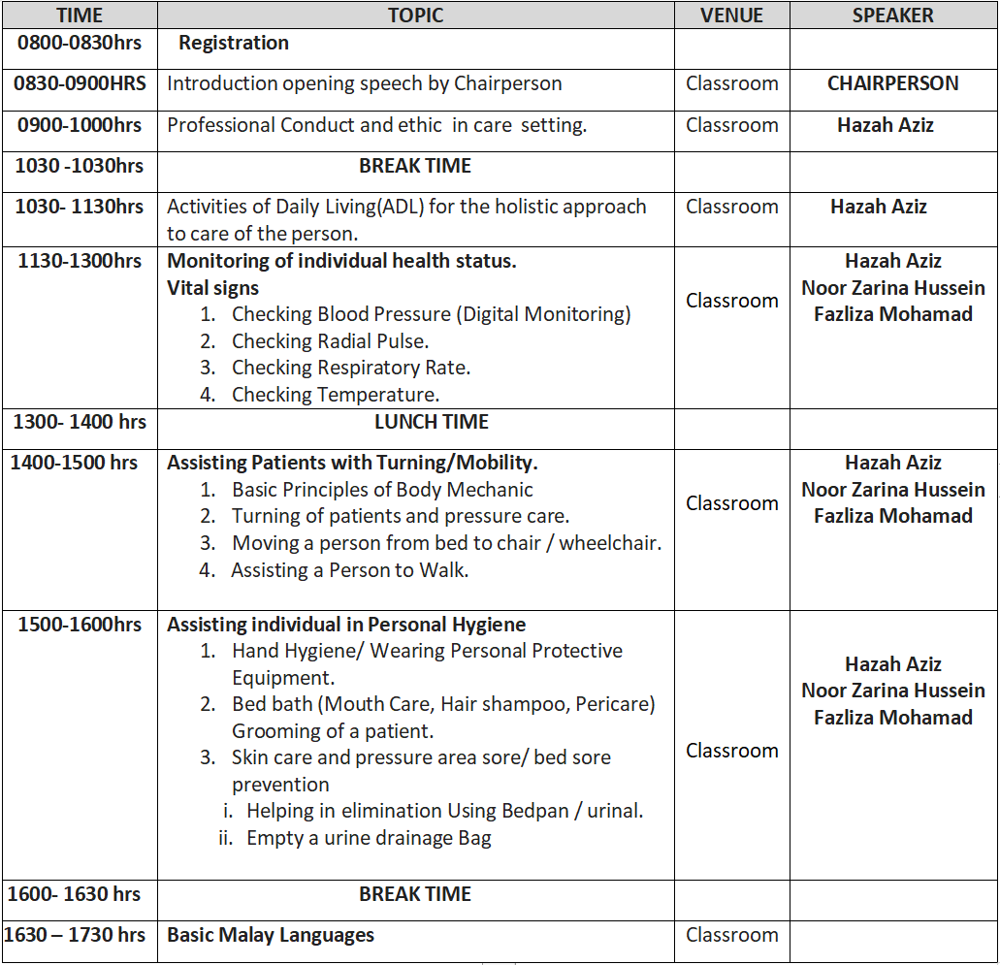
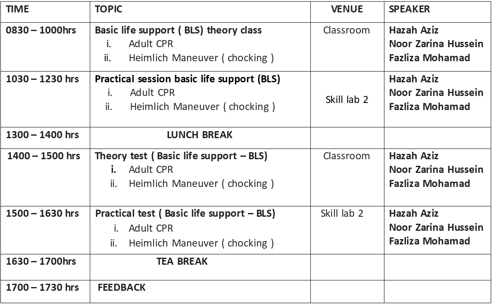

*Demonstrates positive attitude during theory and practical session*

DAY 2
*Demonstrates positive attitude during theory and practical session*

ASSESSMENT:
1. Skill Competency Test - 60%
2. Multiple Choice Test - 40%
3. Overall Score Performance - 100%
4. Total Score below - 50% is to be repeated
Competency Grading:
• Excellent - 90% - 100%
• Good - 70% - 89%
• Fair - 50% - 69%
• Poor - <50%
5. All qualified and competent participants will be awarded with Certificate of Attendance for Professional Healthcare Assistant / Caregiver Workshop to provide a pre requisite for privileging and authorizing the participants to practice specific scope and content of individualized patient care services. Highly recommended to ensure staff competency done every 6 month to 1 year.
DAY 3
*Demonstrates positive attitude during theory and practical session*

ASSESSMENT:
6. Skill Competency Test - 60%
7. Multiple Choice Test - 40%
8. Overall Score Performance - 100%
9. Total Score below ↓69% is to be repeated
Competency Grading :
• Excellent - 90% - 100%
• Good - 70% - 89%
• Fair - 50% - 69%
• Poor - <50%
10. All qualified and competent participants will be awarded with Certificate of Attendance for Professional Healthcare Assistant / Caregiver Workshop to provide a pre-requisite for privileging and authorizing the participants to practice specific scope and content of individualized patient care services. Highly recommended to ensure staff competency done every 6 month to 1 year. Fees: RM 1X,XXX.00